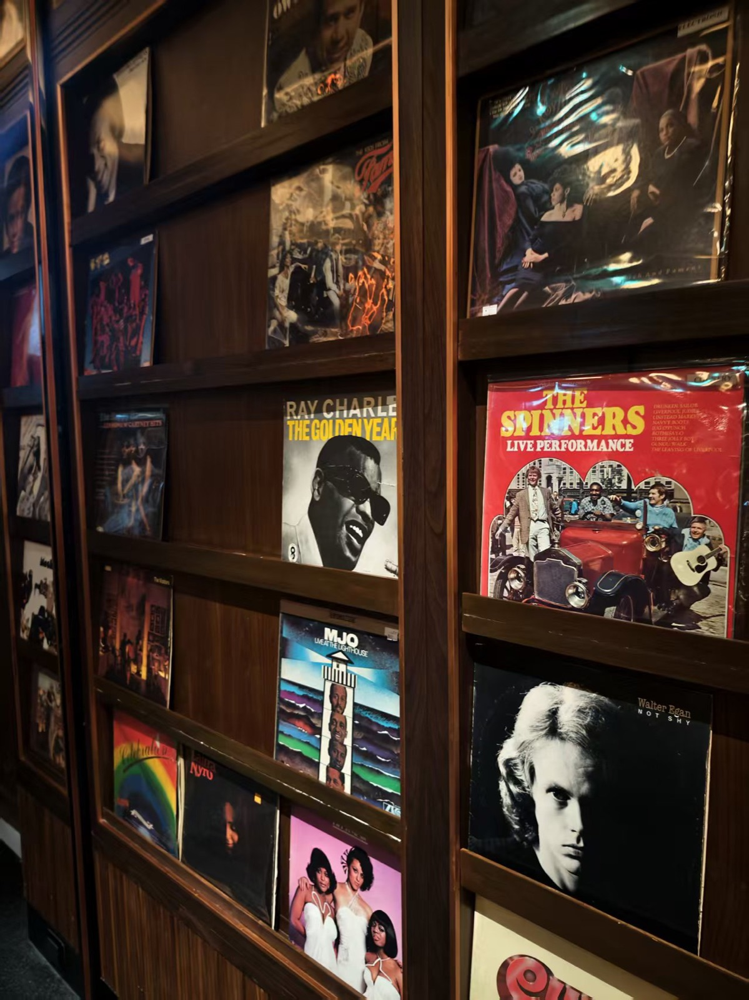
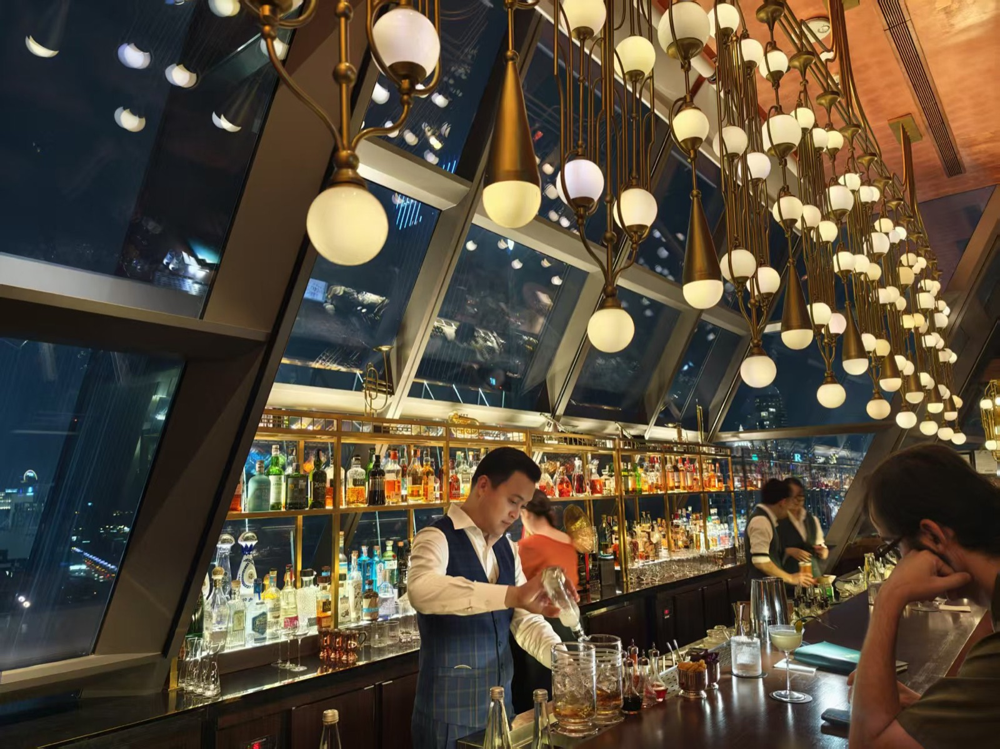

Lennon's
到 Lennon's 的那个晚上，人已经在曼谷晃了一下午。没什么计划，沿街一家一家喝过去，喝到微醺，跳上一辆突突车扎进市中心。Rosewood 的大堂把街上的喧闹全挡在了外面，电梯升到顶层，先到的不是酒吧，是一间黑胶唱片的空间——整面墙按年份排开，隔着玻璃看像座小档案馆。穿过它，才是高空酒吧。

Lennon's 挂在 Asia's 50 Best Bars 2026 的第七名，来之前期待不低。店是酒店高空吧的路子：吊灯一层层压下来，酒柜贴着落地窗排开，窗外是曼谷的灯。signature 鸡尾酒全部用音符命名，酒单装在一台老式胶卷相机里，递给你自己拨着看——这个噱头我认。

点了一杯 MAN DO-TINI：The Botanist 的艾雷金酒打底，配椰子油、干芒果、marian plum 和 bianco vermouth。入口是芒果，咽下去之后慢慢返上来一股糯米饭的味道——一杯酒把芒果糯米饭从头演到尾，这个设计是真的有意思。酒偏烈，两口之后就瞒不住了。

下酒菜点了炸鸡翅和一个苹果干邑甜品。吃完没什么可写的：不难吃，但也不值得专程点第二次。
给 B，扣分扣在预期上。瑰丽加亚洲第七，标准是我自己抬高的——结果吃的东西平平，夜景也没到让人"哇"出来的程度。但它保住了 B：黑胶的空间是真讲究，瑰丽的底子也在，氛围从头到尾都在线。下回再来曼谷，不排斥推门进去，只是不会专程跑一趟。
那晚是 solo trip。一个人从街头喝到楼顶，路上那段微醺本身就是酒的一部分。